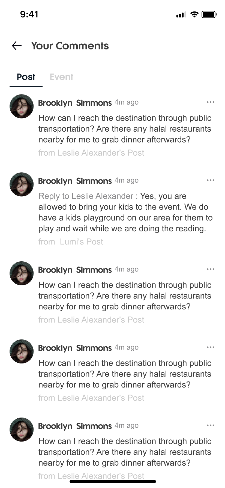
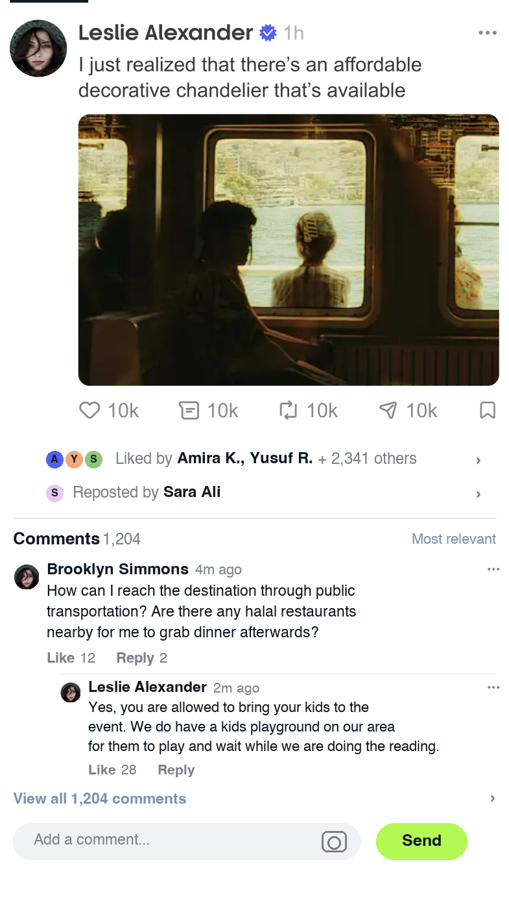

Feeds Detail 更新示意：身份透出 × 评论区 One real Post card → identity rows + comments
本页按同一设计系统把 Feeds Detail 补成完整链路：Post 卡片基底 → 互动身份透出（Liked by / Reposted by 头像行）→ 评论区（评论 / 回复 / 下钻 / 输入条）。
设计来源：My Hub Post 卡片 × Your Comments 条目原图直接裁切
Post 卡片、评论条目版式与头像均为原稿真实像素。
① Post 卡片 （评论区的内容主体）

② Your Comments · 第 155 页原图 （评论条目设计与真实文案来源）
复用逻辑：Feeds 信息流点任意帖子 → 进入 Feeds Detail，主体即这张 Post 卡片（同设计系统，用户零学习成本）；互动身份行与评论区均以该卡为基底叠加。
① 互动身份透出（动作栏下方叠加）原图打底 + 修改层
左：原稿 Post 卡，动作栏只有数字、看不到谁在互动 → 右：动作栏下方叠加 Liked by / Reposted by 头像行，任一头像可点进主页。
● 当前：只有数字，看不到谁互动

1
● 更新后：互动身份透出，头像可点

1
2
| # | 更新点 | 说明 |
|---|---|---|
| 1 | Liked by 头像行 | 动作栏下方新增点赞人头像堆叠（白描边、可点击）+ 文案「Liked by Amira K., Yusuf R. + 2,341 others」。点击任一头像 → 进入对方主页浏览；点击 › 或文案 → 下钻完整点赞列表。 |
| 2 | Reposted by 头像行 | 点赞行下方显示转发人头像 + 「Reposted by Sara Ali」。点击头像 → 转发人主页；点击 › → 完整转发列表。 |
| 3 | 动作栏保持原样 | Like / Comment / Repost / Share / Save 的位置、图标、10k 计数均为原图像素——新增行是纯叠加，不挤压原布局。 |
| 4 | 头像点击进主页 | 与之前确认的规范一致：所有头像（作者、点赞人、转发人）均可点击进入对方主页；游客点 Follow 仍走 GUEST-FLOW 注册墙。 |
② 评论区补齐（同卡下方叠加）原图打底 + 修改层
左：上一步的互动身份行版本，评论无处可看 → 右：同卡下方叠加评论区（评论 / 回复 / 下钻 / 输入条，+600px），原像素一概未动。
● 当前：互动身份可见，但评论无处可看
1
● 更新后：完整评论区（评论 / 回复 / 下钻 / 输入）

1
2
3
4
5
| # | 更新点 | 说明 |
|---|---|---|
| 1 | Comments 区块标题 | 「Comments 1,204」+ 右侧「Most relevant」排序切换，与动作栏 Comment 数同口径。 |
| 2 | 真实评论条目 | Brooklyn Simmons · 4m ago ·「How can I reach the destination…halal restaurants…」。 |
| 3 | 嵌套回复 | Leslie Alexander 回复（「Yes, you are allowed to bring your kids…」第 155 页原文案），缩进 + 分隔线体现层级；Like 28 / Reply。 |
| 4 | View all 1,204 comments | 点 › 下钻完整评论列表页。 |
| 5 | 输入条 + Send | 「Add a comment...」胶囊输入框（含图片/相机入口）+ 品牌绿 Send，固定于详情页底部。 |
| – | 保持不变 | Post 卡片、动作栏、Liked by / Reposted by 行均为原图或上方产出，未改动任何像素。 |
页面级下钻：Feeds Detail 顶部返回 Feeds 信息流；Comment 10k 下钻进入评论区；任一头像 / 名字 / › 可点 → 对方主页或完整列表。游客在评论区点头像 / Reply 同样走 Guest Mode 注册墙（Deferred Follow），与既有规范一致。